組み立て DCK-R3
FaBo Donkey Car Kit Carbon Edition 組み立てマニュアル
組み立てを行う前に必ずお読みください。
対象モデル
| コード番号 | タミヤ 1/10RC XB(完成モデル) TT-02シャーシ |
|---|---|
| DCK-R3F | 有り |
| DCK-R3B | 無し |
Donkey Car(DCK-R3)のパーツ一覧
| 写真 | 部品 | 個数 |
|---|---|---|
| コントロール基板 DKFA-05 #608 FaBo DonkeyBoard OLEDディスプレイ付き,PCA9685搭載、I2Cポート,超音波センサーHS-SR04接続８ポート Rev3.1.1 |
１枚 | |
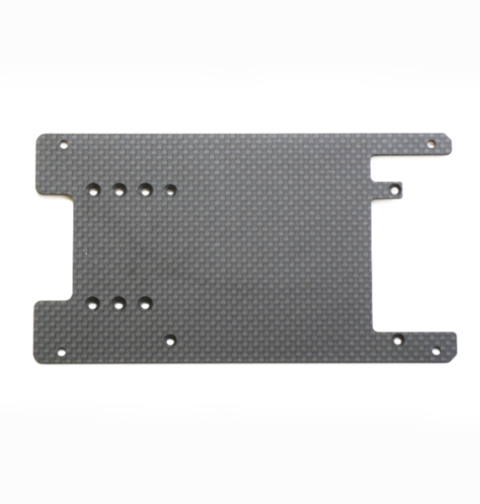 |
拡張ボディ カーボンアッパーパネル | １枚 |
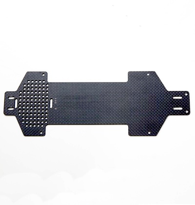 |
拡張ボディ カーボンロワーパネル | １枚 |
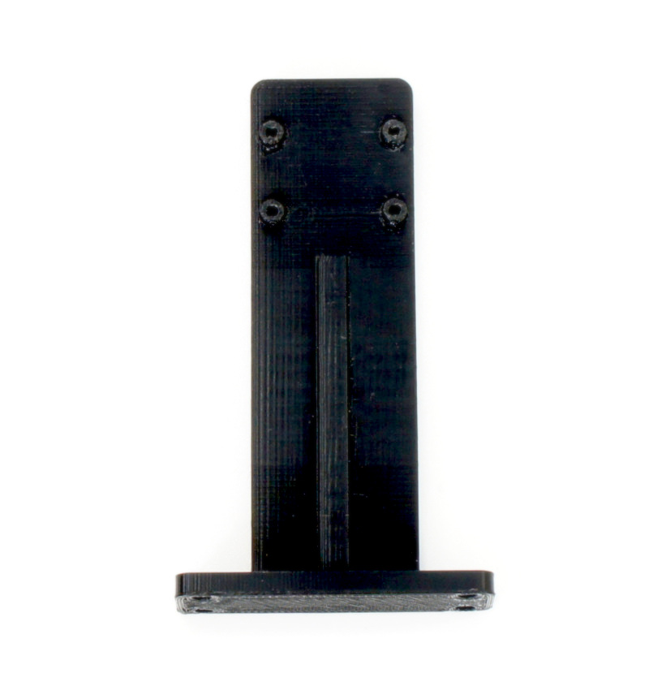 |
拡張ボディ カーボンエディション用カメラマウント | １個 |
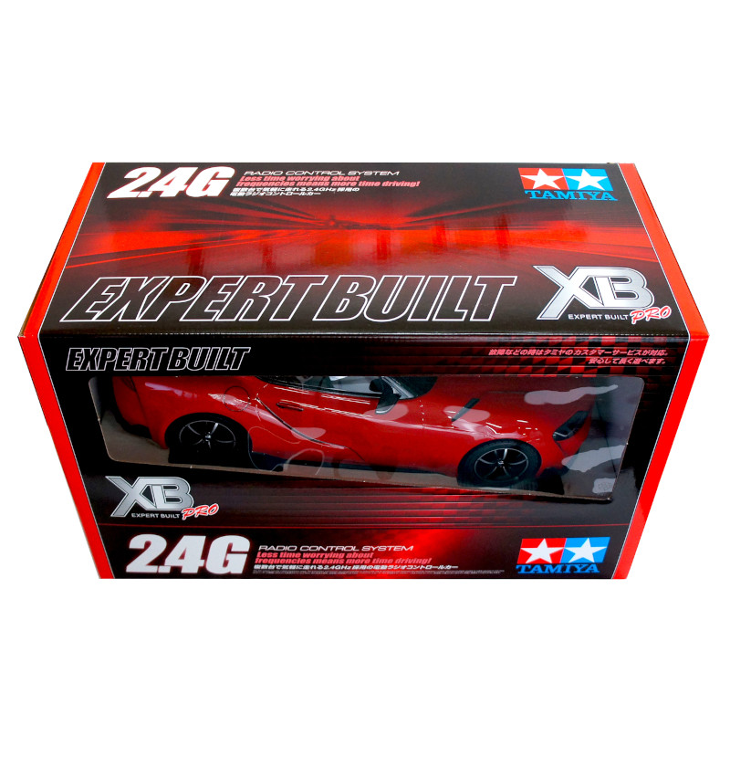 |
RCカー本体 タミヤ TT-02 XBプロ エキスパートビルド ※完成品 ※タミヤ 1/10RC XB トヨタ GRスープラ (TT-02シャーシ) レッド タミヤ 1/10RC XB トヨタ GR 86 (TT-02シャーシ) ホワイト タミヤ 1/10RC XB トヨタ GR 86 (TT-02シャーシ) レッド タミヤ 1/10RC XB SUBARU BRZ(ZD8) (TT-02シャーシ) タミヤ 1/10RC XB トヨタガズーレーシングWRT/ヤリス WRC（TT-02シャーシ） タミヤ 1/10RC XB NSX（TT-02シャーシ） タミヤ 1/10RC XB マツダ MAZDA3 (TT-02シャーシ) タミヤ 1/10RC XB フォード マスタング GT4 （TT-02シャーシ） のいずれかになります。 ※車種は選べません。 ※写真はGRスープラの場合 |
１セット |
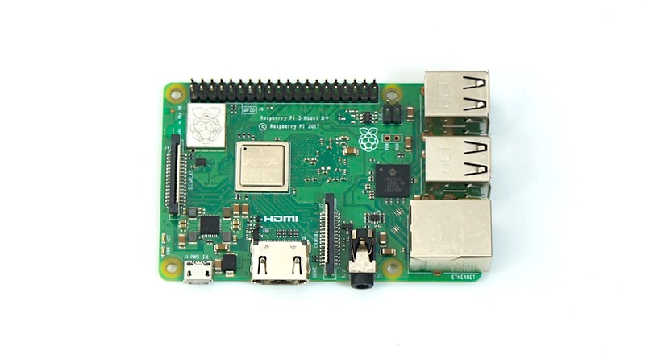 |
Raspberry Pi 3B＋ Broadcom BCM2837B0 Cortex-A53 (ARMv8) 64-bit 1.4GHz 1GB LPDDR2 SDRAM 2.4GHz and 5GHz IEEE 802.11.b/g/n/ac wireless LAN Bluetooth 4.2, BLE CSI camera port 5V/2.5A DC power input |
１枚 |
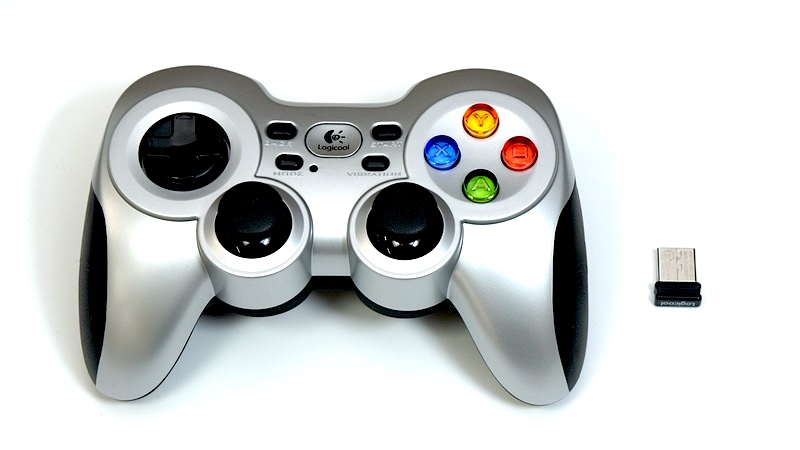 |
ゲームパッド ワイヤレスゲームパッド F710r 2.4 GHZワイヤレス接続 入力規格：DirectInput,XInput 単三乾電池２本付属 レシーバーはUSB |
１台 |
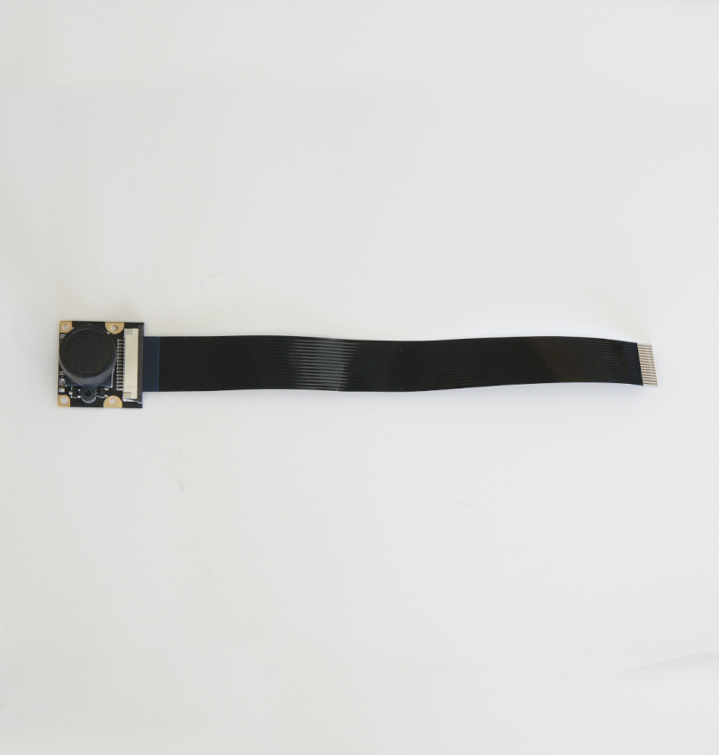 |
CAM026 IMX219-160° ケーブル 200mm（黒） |
１個 |
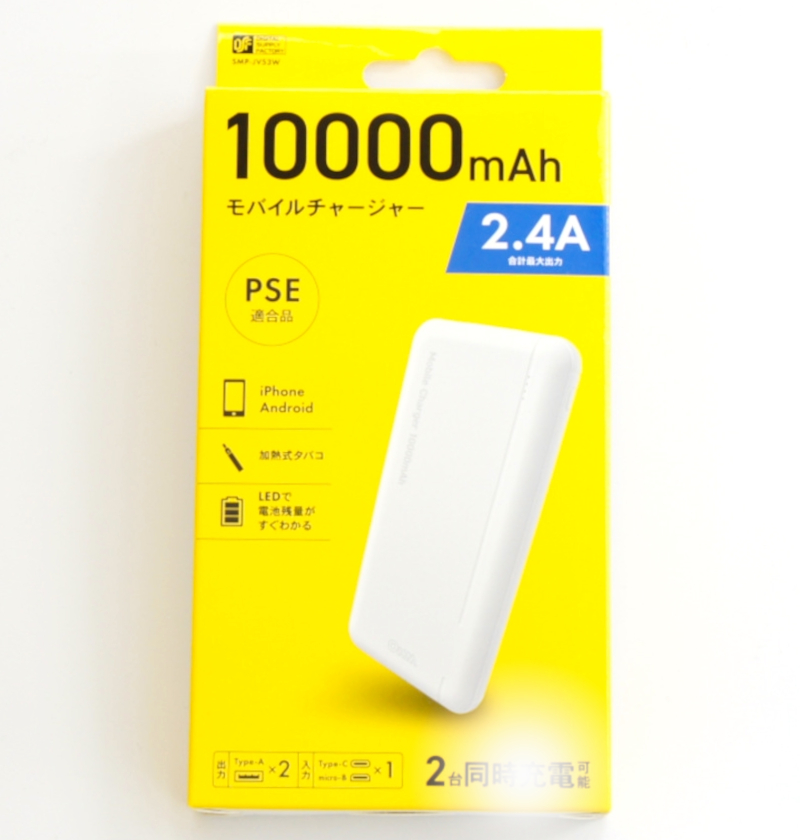 |
モバイルバッテリー モバイルチャージャー10000 オーム電機 SMP-JV53W/05-1196 定格入力 DC5V/2.0A(Type-C/miro-B) 定格出力 DC5V/2.4V(Type-A*2ポート） 定格容量 DC5V/6300mAh 繰り返し充電回数 約500回 充電ケーブル micro-B 約15cm ※充電にはType-Cのケーブルを使用します。本キットには付属しませんのでお客様でご準備願います。 ※くわしい取り扱いに関しては取扱説明書をご覧ください。 |
１個 |
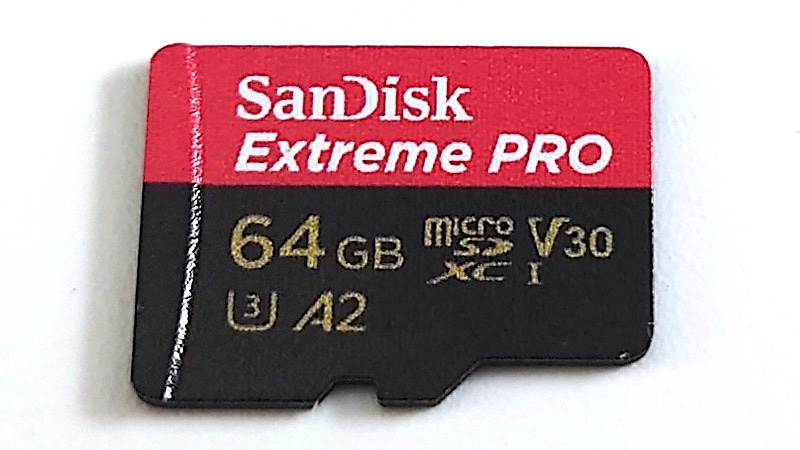 |
microSDカード サンディスク SanDisk 64GB SDSQXCY-064G-GN6MA Extreme PRO SD変換アダプター付属 |
１枚 |
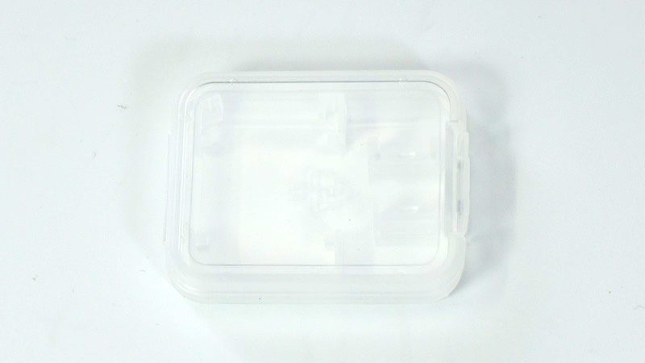 |
SDカードケース | １個 |
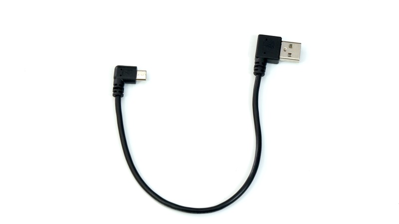 |
電源用USBケーブル 標準A(左)-マイクロUSB（右）、0.2m | １本 |
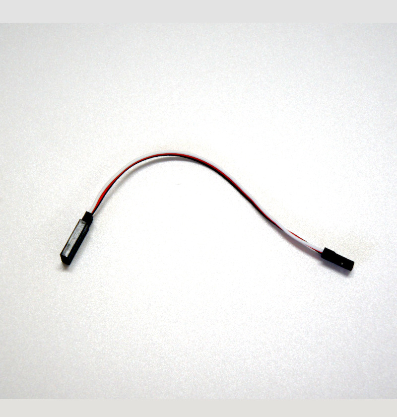 |
延長ケーブル１３０mm |
１本 |
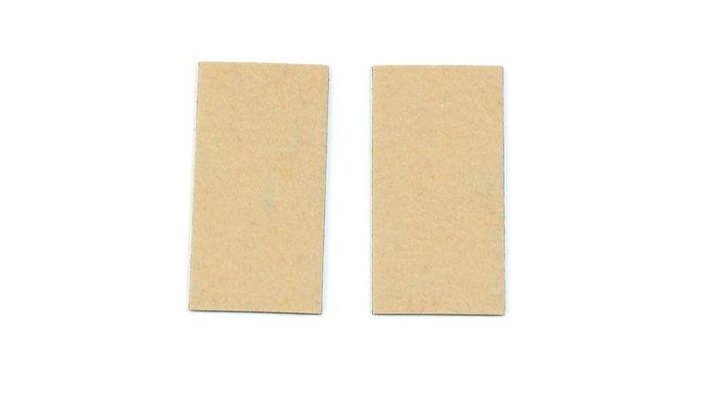 |
両面テープ | ２枚 |
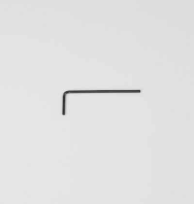 |
六角棒レンチ 六角対辺1.5mm |
１本 |
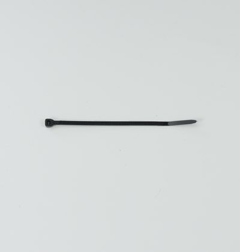 |
結束バンド | 1本 |
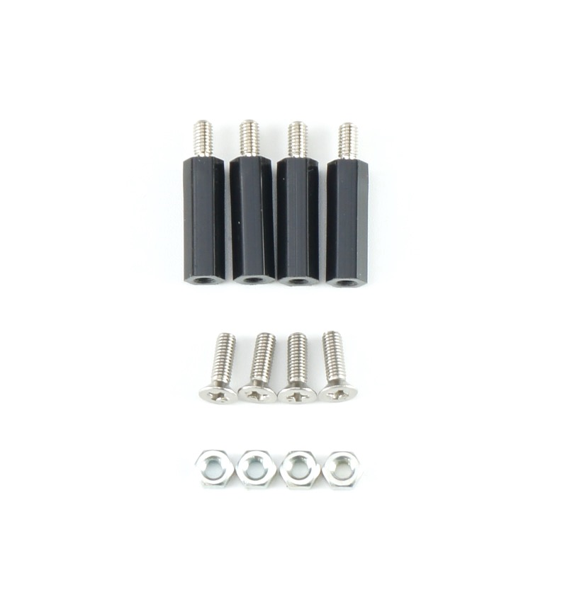 |
カーボンパネル固定ねじ 樹脂六角スペーサー（黒色）M3×18・・・・5 皿ネジM3×10・・・・5 ナット M3・・・・5 各１個づつ予備あり |
１袋 |
| カメラマウント固定ネジ 皿ネジM3×12・・・・5 ナット M3・・・・5 各１個づつ予備あり |
１袋 | |
| カメラ固定ネジ 六角穴付きボルトセルフタッピングネジM2×6・・・・6 各１個づつ予備あり |
１袋 | |
| RaspberryPi固定ネジ、スペーサ 皿ネジM2.6×5・・・・5 ナットM2.6・・・・5 スペーサMB26-11・・・・9 各１個づつ予備あり |
１袋 | |
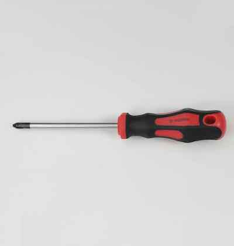 |
プラスドライバー +2×100 | １本 |
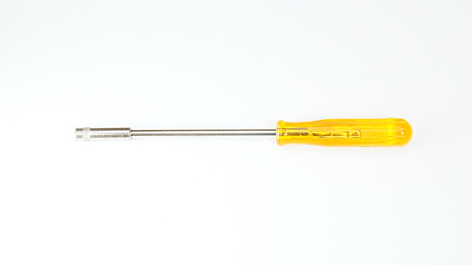 |
ナットドライバー 5.5 | １本 |
| ナットドライバー 5.0 | １本 | |
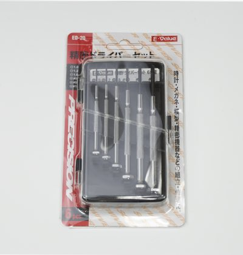 |
精密ドライバーセット ED−20 | １セット |
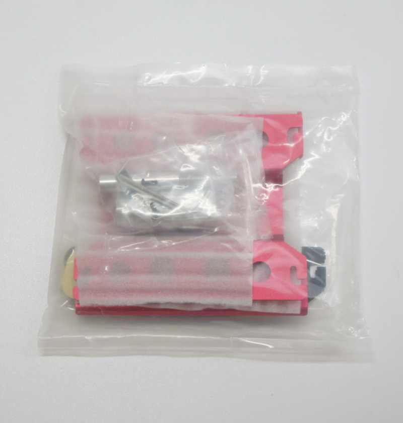 |
作業台 ※出荷時期によって外観が異なる場合がございます。 |
１台 |
※予告なく仕様が変更されることがございます。
※カッターナイフ、ニッパー等が必要となります。お客様でご準備お願いいたします。
※モバイルバッテリーの充電にはUSBタイプＣのケーブルと充電器が必要でございます。お客様でご準備ください。
※開封後はすぐ欠品がないかご確認お願いいたします。もし欠品がございましたら、こちらまでご連絡ください。 https://www.fabo.io/p/blog-page.html
※モバイルバッテリーの充電にはUSBタイプＣのケーブルと充電器が必要でございます。お客様でご準備ください。
※開封後はすぐ欠品がないかご確認お願いいたします。もし欠品がございましたら、こちらまでご連絡ください。 https://www.fabo.io/p/blog-page.html